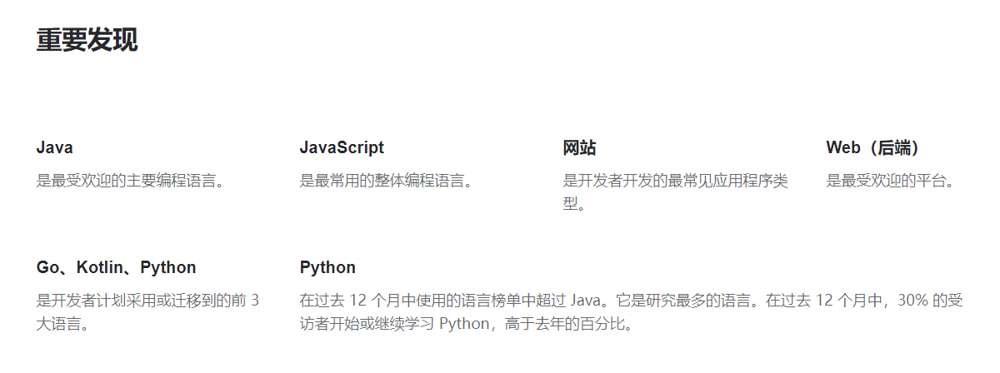
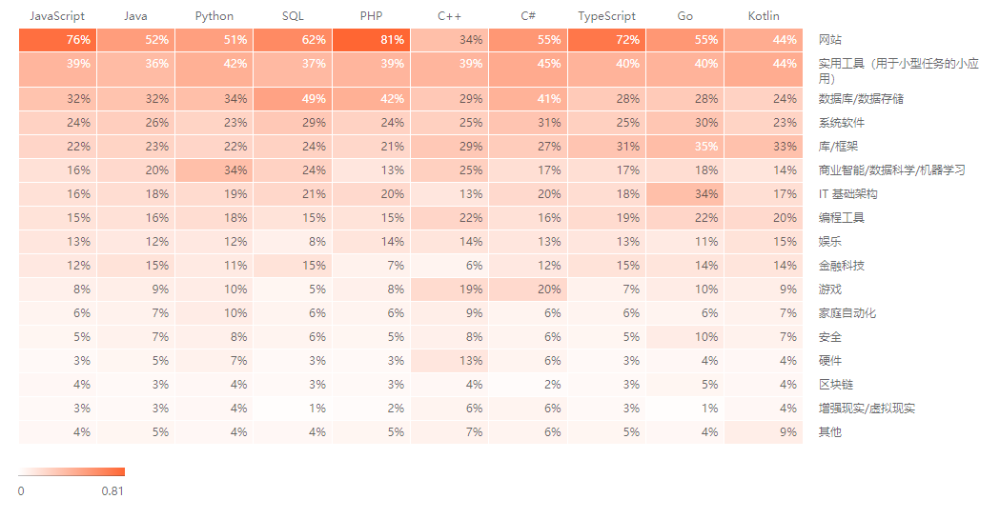

Java 简介
Java 是由 Sun Microsystems 公司于 1995 年 5 月推出的 Java 面向对象程序设计语言和Java 平台的总称。由 James Gosling（高司令，人称 Java 之父）和同事们共同研发，并在 1995 年正式推出。后来 Sun 公司被 Oracle （甲骨文）公司收购，Java 也随之成为 Oracle 公司的产品。
Java 分为三个体系：
- Java SE(J2SE)（Java2 Platform Standard Edition，java平台标准版）
- Java EE(J2EE)（Java 2 Platform,Enterprise Edition，java平台企业版）
- Java ME(J2ME)（Java 2 Platform Micro Edition，java平台微型版）
Java 体系关系如下图：

简单来说，Java SE 就是标准版，包含标准的 JVM 和标准库，而Java EE是企业版，它只是在Java SE 的基础上加上了大量的 API 和库，以便方便开发 Web 应用、数据库、消息服务等，Java EE 的应用使用的虚拟机和 Java SE 完全相同。
Java ME 就和 Java SE 不同，它是一个针对嵌入式设备的“瘦身版”，Java SE 的标准库无法在 Java ME 上使用，Java ME 的虚拟机也是“瘦身版”。
首先要学习 Java SE，掌握Java语言本身、Java 核心开发技术以及 Java 标准库的使用；
如果继续学习 Java EE，那么Spring框架、数据库开发、分布式架构就是需要学习的；
如果要学习大数据开发，那么 Hadoop、Spark、Flink 这些大数据平台就是需要学习的，他们都基于 Java 或 Scala 开发；
TIBOE 排行榜
TIOBE 排行榜是根据互联网上有经验的程序员、课程和第三方厂商的数量，并使用搜索引擎（如 Google、Bing、Yahoo!）以及 Wikipedia、Amazon、YouTube 和 Baidu（百度）统计出排名数据，可以反映某个编程语言的热门程度。
最新TIOBE 编程语言排行榜显示，Java 在2021年07月榜单中排名第二，此前长年霸榜，和 C 语言一同占据编程语言的半壁江山。


JetBrains 开发者生态系统调查
JetBrains是一家捷克的软件开发公司，该公司位于捷克的布拉格，并在俄罗斯的圣彼得堡及美国麻州波士顿都设有办公室，该公司最为人所熟知的产品是Java编程语言开发撰写时所用的集成开发环境：IntelliJ IDEA。
根据《JetBrains 2020 开发者生态系统调查》显示，Java 任是最受欢迎的主要编程语言，并在多个领域都保持着强劲的势头和热度。


为什么 Java 应用最广泛？
从互联网到企业平台，Java 是应用最广泛的编程语言，原因在于：
- Java 是基于 JVM 虚拟机的跨平台语言，一次编写，到处运行；
- Java 程序易于编写，而且有内置垃圾收集，不必考虑内存管理；
- Java 虚拟机拥有工业级的稳定性和高度优化的性能，且经过了长时期的考验；
- Java 拥有最广泛的开源社区支持，各种高质量组件随时可用。
Java 语言常年霸占着三大市场：
- 互联网和企业应用，这是Java EE 的长期优势和市场地位，例如 Spring boot 构建企业级 Web 应用；
- 大数据平台，主要有 Hadoop、Spark、Flink 等，他们都是 Java 或 Scala（一种运行于 JVM 的编程语言）开发的；
- Android 移动平台，开发安卓应用软件。